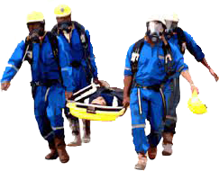
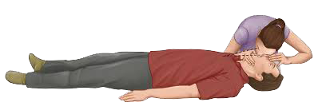
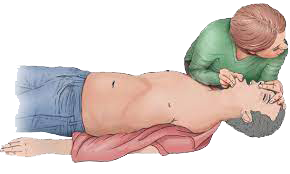

If another worker is knocked down by a release of H 2 S it may be your job to rescue that person. If you see a co-worker down, you must not go in. You must first protect your self or you will likely end op on the same predicament. Rescue is not simply a matter of picking up someone and removing them to safety either.

Your initial response should be to get out of the area, sound an alarm, and wearing the breathing apparatus.
Rescue any victims, revive them and call for medical aid. Consequently, it is important that you are completely familiar with appropriate and efficient rescue techniques so that you minimize potential harm to both the victim and yourself.
Mouth To Mouth Resuscitation Method
A successful rescue strategy includes knowledge about resuscitation. One you have vacated the area, sounded an alarm, donned breathing apparatus and brought the victim to the safe area, timing is critical. Mouth to mouth resuscitation is the quickest and most effective techniqu e for restoring breathing. Resuscitation must begin immediately and you need to follow an accepted procedure.
There are six steps in the mouth-to-mouth resuscitation procedure :
Assess breathing
Open the airway
Reassess breathing
Ventilate the lungs
Assess the pulse
Demonstration
Assess responsiveness
Purpose : To determine the victim's level of consciousness
Action : gently tap or shake the shoulder and shout, "Are you 0K?" This should be done with care if a head or neck injury is suspected.
Asses Breathing
Purpose : To determine if the victim is breathing.
Action : Place your ear close to the victim's mouth and nose, watch the victim's chest and :
LOOK for chest movement
LISTEN f or sounds of breathing
FEEL for breath on your check
ALLOW for 3 to 5 seconds
If the victim is not breathing...
Open the airway
Purpose : To open the airway to the lungs.
Action : Perform the head tilt chin lift manuver. Use one hand to push back on the forehead while at the same time using the fingers of the other hand to lift the bony part of the jaw.
Reassess breathing

Purpose : To see if opening the airway was sufficient to restore breathing
Action : With the airway open, look, listen and feel for any signs of an air movement take 3 to 5 seconds. If breathing is detected send for medical aid, place the victim in the recovery position and monitor breathing closely.
If breathing is absent…
Ventilate The Lungs
Ventilate the lungs

Purpose : To provide oxygen to the casualty's lungs.
Action :
Keep airway open.
Pinch nostrils closed.
Take a deep breath, seal your mouth around the victim's mouth and slowly blow air into the victim's lungs for 1 to 1.5 seconds.
Move your mouth away and look towards the chest while keeping your cheek near the victim's face. Look for the chest to fall, listen to air sounds and feel with your check for air being exhaled.
Give a second breath, maintain head tilt and
Assess the pulse
Purpose : To determine if the victim has a pulse.
Action : Assess the pulse
Keep airway open.
Locate the Adam’s Apple
While pressing gently, slide two fingertips down from the Adam's Apple into the groove of the neck on the side nearest to you to locate the ceratoid artery.
Try to detect a pulse - take 5 to 10 seconds. If pulse is detected, continue ventilations at the rate of to 15 per minute. Re-check the pulse after one minute and every few minutes thereafter.
If no pulse is d etected the victim probably requires CPR (cardio pulmonary resuscitation), which is beyond the scope of this course. You are encouraged to take additional training to acquire these stills.